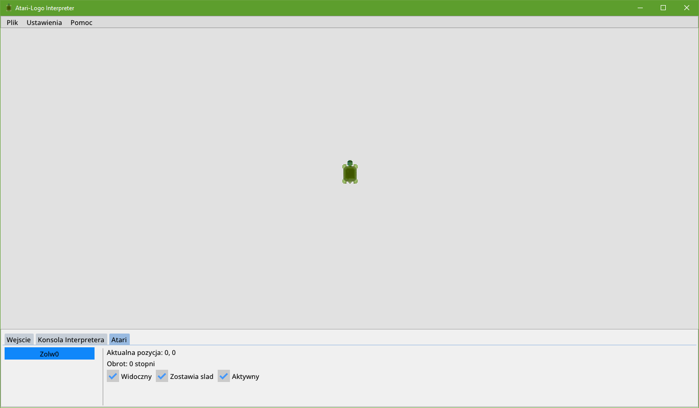

Interfejs użytkownika
Na górze znajduje panel główny aplikacji, a na dole jest panel do kontroli interpretera.Panel główny
W zakładce Plik można zapisać stan planszy lub wyłączyć program.
Klikając w Ustawienia pojawi się okno ustawień. Zmiana rozmiaru czcionki wymaga restartu programu.
Klikając w Pomoc pojawi się strona z dokumentacją.
Panel interpretera
W zakładce Wejscie znajduje się miejsce na wpisywanie poleceń i pod nim pojawia się historia wpisywanych poleceń.W zakładce Konsola interpretera pojawiają się wszystkie błędy.
W zakładce Atari pojawiają się wszystkie informacje o żółwiach. 
Inne informacje
Klikając F5 pojawi się okno logowania błędów. Błędy są również zapisywane w pliku log.txt.Motywy imgui można modyfikować w pliku imgui, a ustawienia użytkownika są zapisywane w pliku config.